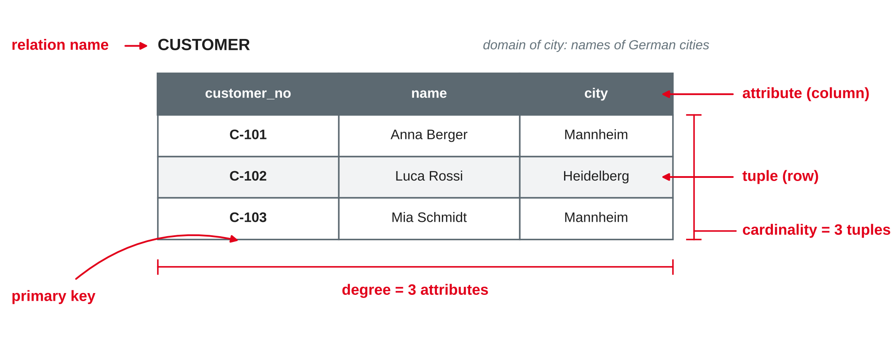
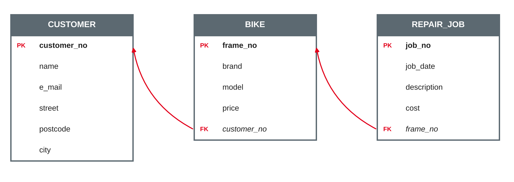

Data Management
Relations, tuples and domains · keys · integrity constraints · mapping ER models to relational schemas
DHBW · Digital Business Management (Business IT) · Semester 2
Today we turn ER models into tables: the logical level from session 3.
Relations, tuples, attributes and domains
"Future users of large data banks must be protected from having to know how the data is organized in the machine."
Codd (1970, p. 377).

Own illustration based on Codd (1970) and Elmasri and Navathe (2016).
| Relational model | Table view | Older file view |
|---|---|---|
| Relation | Table | File |
| Tuple | Row | Record |
| Attribute | Column | Field |
| Domain | Data type plus allowed values | — |
| Degree | Number of columns | — |
| Cardinality | Number of rows | Number of records |
Based on Elmasri and Navathe (2016).
These properties make a relation more than "any table in Excel": a spreadsheet can have duplicate rows, merged cells and lists in one cell.
Based on Codd (1970) and Elmasri and Navathe (2016).
Notation used in this module:
CUSTOMER(customer_no, name, e_mail, street, postcode, city)
BIKE(frame_no, brand, model, price, customer_no → CUSTOMER)
Bold = primary key (on paper: underline it) · italic with → = foreign key and the relation it refers to.
Based on Elmasri and Navathe (2016).
Identifying tuples and linking relations
| Key | Definition | Example in BIKE |
|---|---|---|
| Superkey | Any set of attributes whose values are unique for every tuple | {frame_no, brand}, {frame_no} |
| Candidate key | A minimal superkey: no attribute can be removed without losing uniqueness | {frame_no} |
| Primary key | The candidate key chosen to identify tuples | frame_no |
| Alternate key | Every other candidate key | — (e.g. an RFID tag number, if stored) |
Based on Codd (1970) and Elmasri and Navathe (2016).
Based on Elmasri and Navathe (2016).

Based on Codd (1970); own illustration.
For each relation, name the candidate keys, choose a primary key and name any foreign key.
Rules the database enforces
| Constraint | Rule | Violated by |
|---|---|---|
| Domain constraint | Every value comes from the attribute's domain | price = "cheap", postcode = 6816 |
| Key constraint | No two tuples have the same key value | Two bikes with frame_no WAX123 |
| Entity integrity | No part of the primary key is NULL | A repair job without job_no |
| Referential integrity | Every foreign key value exists in the referenced relation, or is NULL | BIKE.customer_no = C-999, but there is no customer C-999 |
Based on Elmasri and Navathe (2016).
Customer C-101 is deleted, but bike WAX123 still refers to C-101. The schema defines what happens:
| Option | Effect on BIKE |
|---|---|
| Restrict / no action | The delete is rejected while bikes refer to C-101 |
| Cascade | The bikes of C-101 are deleted as well |
| Set NULL | BIKE.customer_no is set to NULL — the bike has no owner |
The right choice is a business decision: deleting a customer must not silently delete the repair history of a bike.
Based on Elmasri and Navathe (2016).
From the conceptual to the logical model
| ER construct | Relational schema |
|---|---|
| Strong entity type | Relation with all simple attributes; the key becomes the primary key |
| Composite attribute | Only its parts become attributes: street, postcode, city |
| Multi-valued attribute | New relation with the owner's key as foreign key, e.g. PHONE(customer_no, phone_no) |
| Derived attribute | Not stored — calculated when needed |
| Weak entity type | Relation with the owner's key as foreign key; primary key = owner key + partial key |
Based on Elmasri and Navathe (2016, Chapter 9) and Gadatsch (2019).
| Relationship | Relational schema |
|---|---|
| 1:N | Foreign key on the N side, referring to the 1 side; relationship attributes go with it |
| 1:1 | Foreign key on one side — preferably the side with total participation (avoids NULLs); add a uniqueness rule |
| M:N | New relation with foreign keys to both sides; together they form the primary key; relationship attributes become columns |
| Recursive | Foreign key to the same relation, named after the role, e.g. supervisor_no |
Based on Elmasri and Navathe (2016, Chapter 9) and Gadatsch (2019).
| Option | Relations | Good when … |
|---|---|---|
| A · Superclass and subclasses | EMPLOYEE(employee_no, name) · MECHANIC(employee_no, qualification) · SALESPERSON(employee_no, sales_target) — subclass key is also FK → EMPLOYEE | always works; subclasses have own relationships |
| B · Subclasses only | MECHANIC(employee_no, name, qualification) · SALESPERSON(employee_no, name, sales_target) | specialisation is total and disjoint |
| C · One relation | EMPLOYEE(employee_no, name, emp_type, qualification, sales_target) | few subclass attributes; many NULLs are acceptable |
Based on Elmasri and Navathe (2016, Chapter 9).
ER model (session 3): Customer buys Bike (1:N, optional for the bike) · Bike is repaired in Repair job (1:N, mandatory for the repair job)
CUSTOMER(customer_no, name, e_mail, street, postcode, city)
BIKE(frame_no, brand, model, price, customer_no → CUSTOMER)
REPAIR_JOB(job_no, job_date, description, cost, frame_no → BIKE)
Own example based on the bike shop case from session 3.
Map the rest of the extended bike shop model from session 4 to relations. Mark primary and foreign keys.
The mapped schema is the first part of milestone 2 (relational schema, after session 7). You will normalise it in session 6 and implement it in SQL in session 7.
Preparation: bring your team's relational schema. Look for data that is stored more than once — where could it become inconsistent?